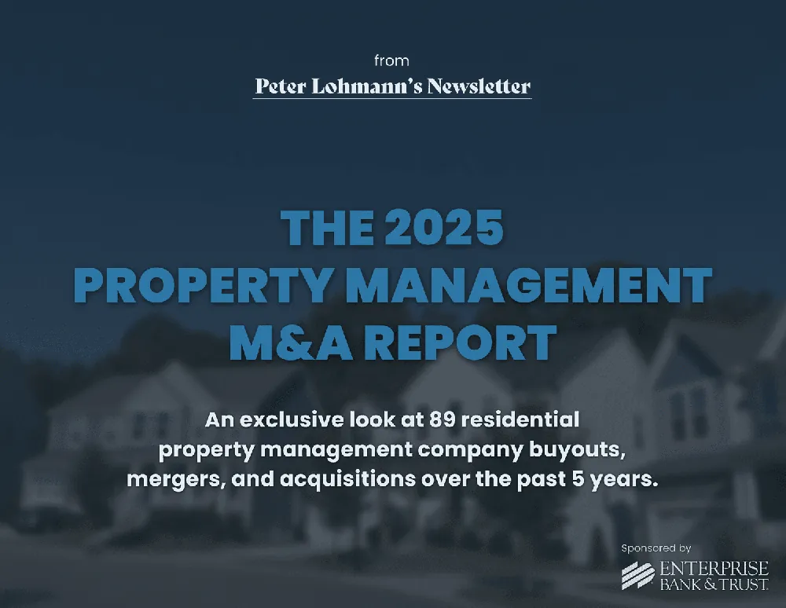
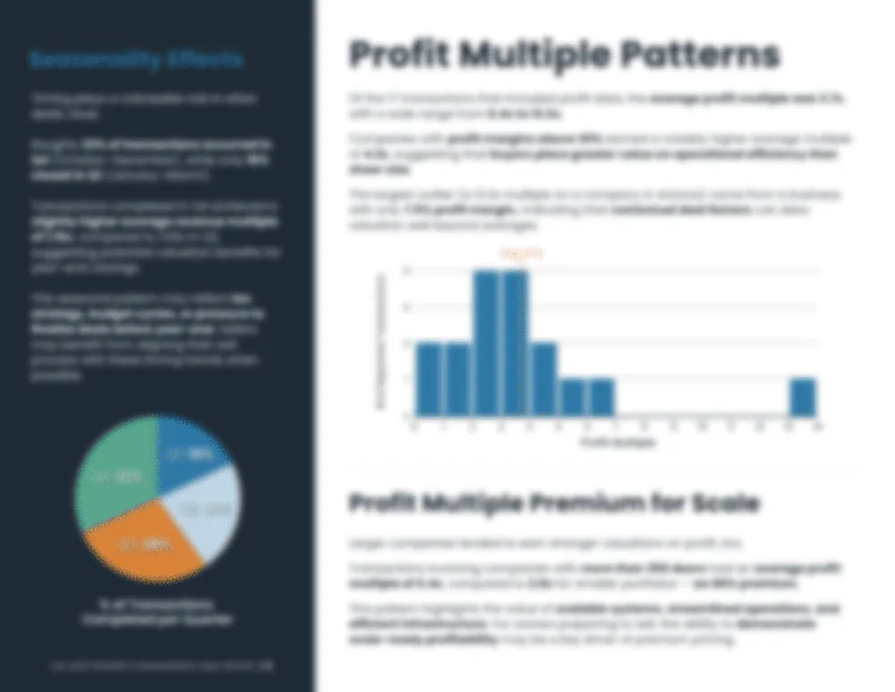

Wouldn’t you love to know how much property management companies actually sell for?
For years, I’ve watched PM owners try to answer that question with little more than hearsay and guesswork. One person “heard” that a company in their market sold for 3x revenue. Another swears they got an offer at 2x EBITDA. Brokers pitch big numbers to win listings, but nobody ever sees the actual closing docs.
The result? Business owners are making one of the biggest financial decisions of their lives (whether to buy or sell) without real data.
That never sat right with me. Other industries have valuation benchmarks and deal comps. Property management? We’ve been operating in the dark.
That’s why I decided to fix it.
So what exactly is the Property Management M&A Report?
In short: it’s the first-ever dataset of its kind in our industry. I gathered details from 89 real, closed transactions of property management companies, spanning different regions, sizes, and buyer types. The goal was simple: replace guesswork with facts.
This isn’t a broker pitch deck. It’s not based on inflated listings or rumor-mill multiples. Every deal in the report actually closed, and the numbers were verified. That distinction matters. For the first time, we can say with confidence: this is what companies like yours have actually sold for.

So why does this report matter?
For starters, it finally gives property management company owners a clear benchmark for what their business might actually be worth. Until now, if you asked ten different people, “How much is my property management company worth?”, you’d get ten wildly different answers. Some would say 1x revenue. Others would throw out 3x EBITDA. Nobody really knew. With this report, you can look at real data from 89 transactions and see where your company might fit in.
It’s also a powerful tool for buyers. Instead of guessing or relying on gut feel, you can compare multiples across different deal sizes, profit margins, regions, and buyer types. Want to know if small companies get the same multiples as large ones? Or whether private equity buyers pay differently than local operators? The data is right there.
And then there are the trends. The report tracks five years of deal activity, so you can see how timing, profitability, and scale impact valuation. For example:
Does seasonality matter in closing prices?
Is there a tipping point where size alone drives higher multiples?
Do companies with stronger margins always command a premium?
These aren’t hypotheticals anymore. The answers are grounded in actual, closed transactions.
Other industries have had this kind of benchmark data for decades. Real estate brokerages, dental practices, accounting firms… they all track sales and multiples. Property management has never had its own version (until now).
The bottom line: whether you’re buying, selling, or just planning for the future, this report shines a light on what’s really happening in our industry.
Key Questions the M&A Report Answers
When I set out to build this report, I wanted to answer the exact questions that property managers ask me every week. Buying or selling a PM company is a huge decision, and until now, the answers have been vague at best. With 89 verified transactions in hand, the report sheds light on the issues that matter most.
If I’m looking to sell, what should I expect to get?
This is the #1 question I hear from PM owners. You’ve spent years building a company, but when it’s time to exit, how do you know what’s fair? The M&A Report lays out what sellers have actually walked away with across dozens of deals. Instead of relying on your buddy’s back-of-the-napkin guess, you can see what real buyers have paid in similar situations.
If I’m looking to buy, what should I expect to pay?
Buying doors is the fastest way to grow, but finding a company for sale (and knowing what to offer) is tricky. The report gives buyers a baseline for what’s realistic, so you don’t overpay or lose a deal by lowballing. Whether you’re acquiring your first PM company or expanding into a new market, this data helps you move with confidence.
What factors affect PM company value?
Not all companies are valued equally. The report breaks down how size, margins, growth rate, and even timing can swing multiples up or down. Spoiler: it’s not just about revenue.
What multiples are typical in property management M&A?
Multiples are the shorthand everyone uses in M&A, but in property management, they’ve been all over the map. The report compiles five years of real multiples across dozens of closed deals. Now, you can see the ranges for yourself.
How do profit margins, door count, and buyer type change valuation?
The report shows which key variables actually play out in closed transactions. Plus, it highlights differences between deals done with local operators, strategic buyers, and private equity.
Who Should Buy the Property Management M&A Report?
The short answer: anyone who wants to stop guessing about valuations in our industry. But let’s break it down.
PM company owners considering an exit. If you’re thinking about selling in the next year (or the next decade), this report gives you the clearest picture yet of what you might expect. You’ll see where companies like yours have landed and what factors made the biggest difference in price.
Buyers looking to expand through acquisition. Growth by acquisition can be a smart play, but it’s also risky if you don’t know what “market rate” really means. The M&A Report helps buyers move quickly and confidently when opportunities pop up.
Advisors and consultants. If you’re advising clients on succession planning or growth, you need benchmarks you can trust. This report arms you with real data, not just “rules of thumb.”
Vendors and banks. From lenders to software providers, anyone serving PM companies benefits from understanding deal flow and valuation trends. This report gives context for where the industry is headed.
Bottom line: if you care about the future of property management businesses, this report belongs on your desk.
What’s Inside the M&A Report?
So, what do you actually get when you buy the report?
First, you’ll see a comprehensive breakdown of multiples - not just averages, but how valuations shift by company size, profit margin, buyer type, and region. A 250-door company in Texas doesn’t sell under the same terms as a 1,500-door company in California. This report shows you exactly how those differences play out in closed deals.
Second, the dataset spans five years of real-world activity (2020–2025). That means you can track how multiples have shifted over time - through market booms, inflation spikes, and changing buyer appetite. It’s one thing to know what deals closed last year. It’s another to see the trend lines across half a decade.

How to Get the Report
Getting your hands on the M&A Report is straightforward.
If you submitted a transaction, you should already have a copy waiting in your inbox. (If not, reach out and I’ll make sure it gets to you.)
If you’re a Crane member, check the Circle community for an exclusive offer I’ve shared just for members.
For everyone else, the full report is available for purchase directly on my site. Newsletter subscribers get an additional discount, so if you’re on the list, check your inbox for the latest code.
The price was intentionally set to be accessible (thanks to our sponsor - Enterprise Bank & Trust), so whether you’re a small PM shop planning ahead or a larger firm actively pursuing acquisitions, this report won’t just sit on your desktop. You’ll actually use it.
The Bottom Line on Property Management Company Valuations
For the first time, property managers don’t have to guess at valuations. We finally have hard numbers (real, closed transactions) that show what companies in our industry are actually worth.
It’s a long-overdue tool. Other industries have had valuation benchmarks for years, but property management has always been left piecing together rumors and broker anecdotes. The M&A Report changes that. This is the baseline our industry has been missing.
Whether you’re thinking about selling someday, actively buying, or just curious where you stand, the insights inside this report can help you make smarter, more confident decisions.
Go check it out here if you’re curious. Wouldn’t you love to know what the market says your company is worth?